aRT Weathering Missingness Report
aRT & EOD Missingness Information
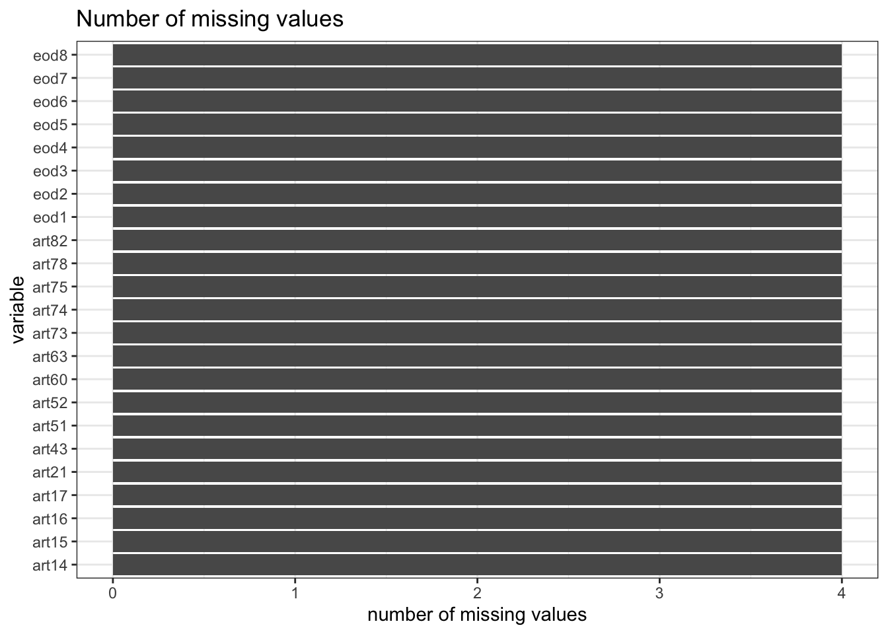
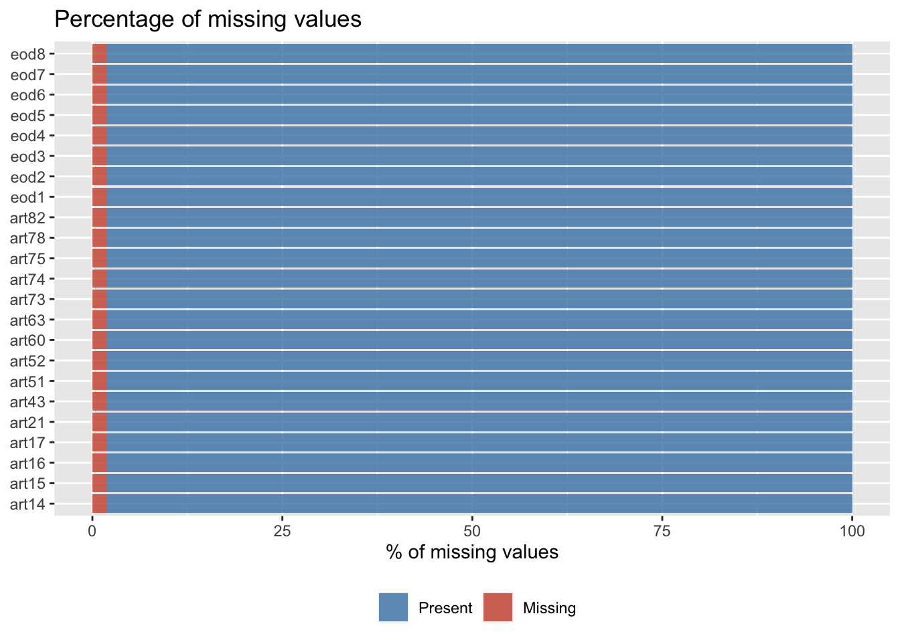
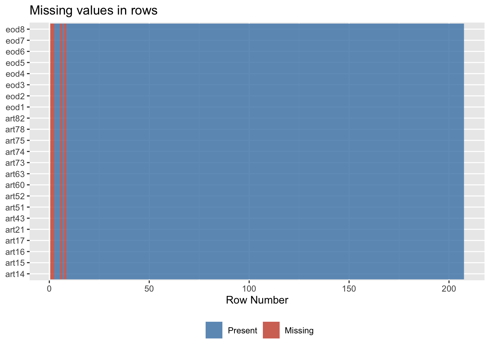
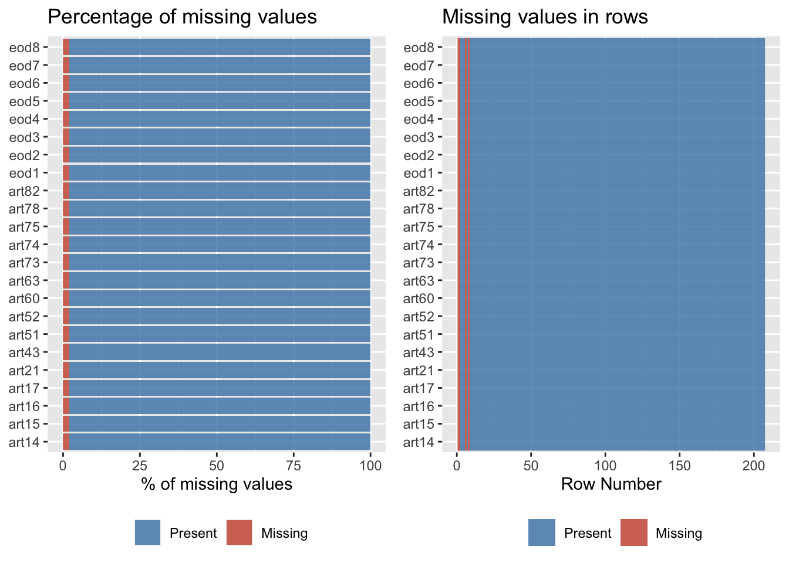
Missingness % Range for Participants
| Missing % | Frequency |
|---|---|
| 0 | 203 |
| 100 | 4 |
Missingness for Biomarkers
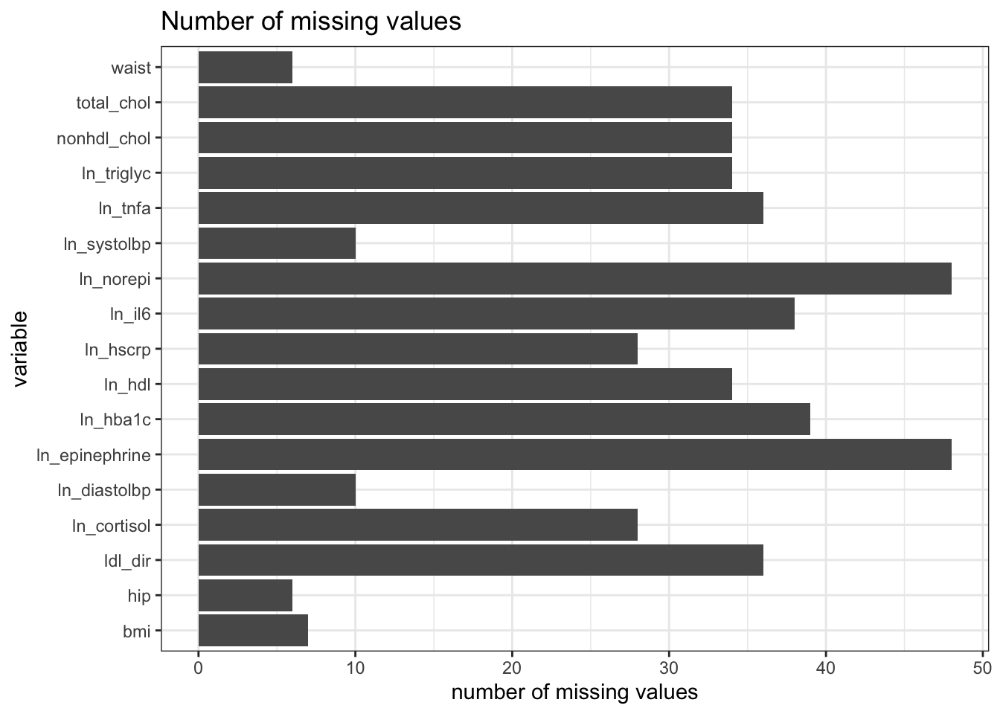
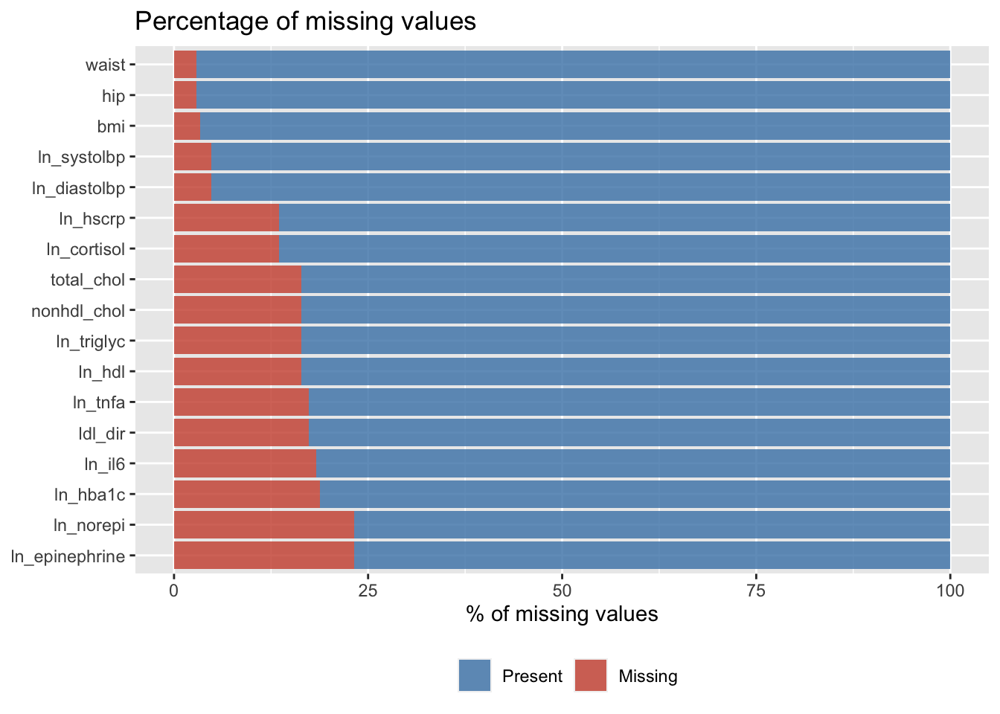
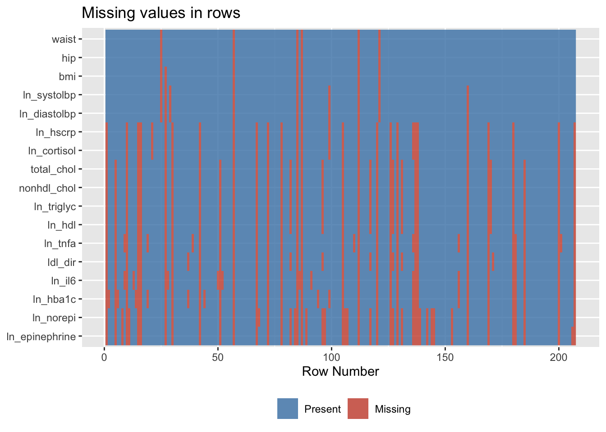
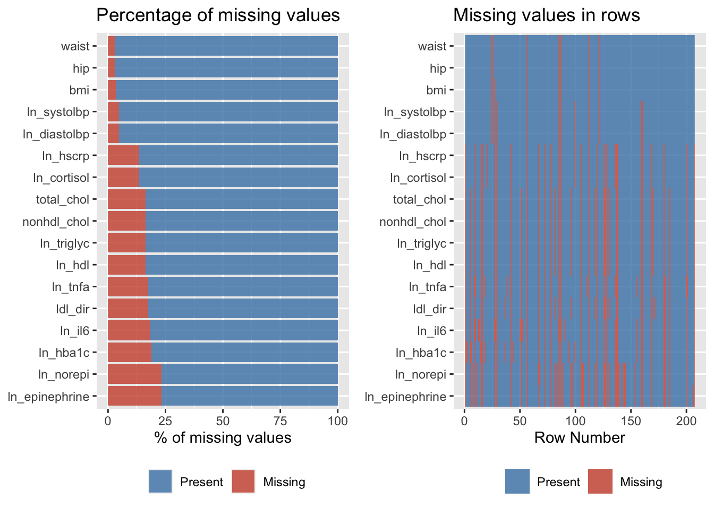
# A tibble: 17 × 4
# Groups: key, total [17]
total key num.isna pct
<int> <chr> <int> <dbl>
1 207 bmi 7 3.38
2 207 hip 6 2.90
3 207 ldl_dir 36 17.4
4 207 ln_cortisol 28 13.5
5 207 ln_diastolbp 10 4.83
6 207 ln_epinephrine 48 23.2
7 207 ln_hba1c 39 18.8
8 207 ln_hdl 34 16.4
9 207 ln_hscrp 28 13.5
10 207 ln_il6 38 18.4
11 207 ln_norepi 48 23.2
12 207 ln_systolbp 10 4.83
13 207 ln_tnfa 36 17.4
14 207 ln_triglyc 34 16.4
15 207 nonhdl_chol 34 16.4
16 207 total_chol 34 16.4
17 207 waist 6 2.90Missingness % Range for Participants
| Missing % | Frequency |
|---|---|
| 0 | 133 |
| 5.88 | 17 |
| 11.76 | 17 |
| 17.65 | 1 |
| 23.53 | 1 |
| 29.41 | 3 |
| 35.29 | 1 |
| 41.18 | 6 |
| 58.82 | 3 |
| 70.59 | 19 |
| 82.35 | 1 |
| 88.24 | 1 |
| 100 | 4 |
Missingness for Covariates
Only Neuroticism had missing values.
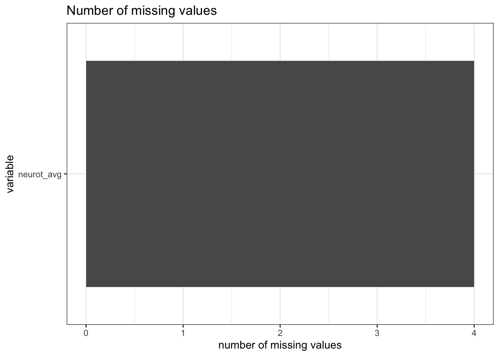
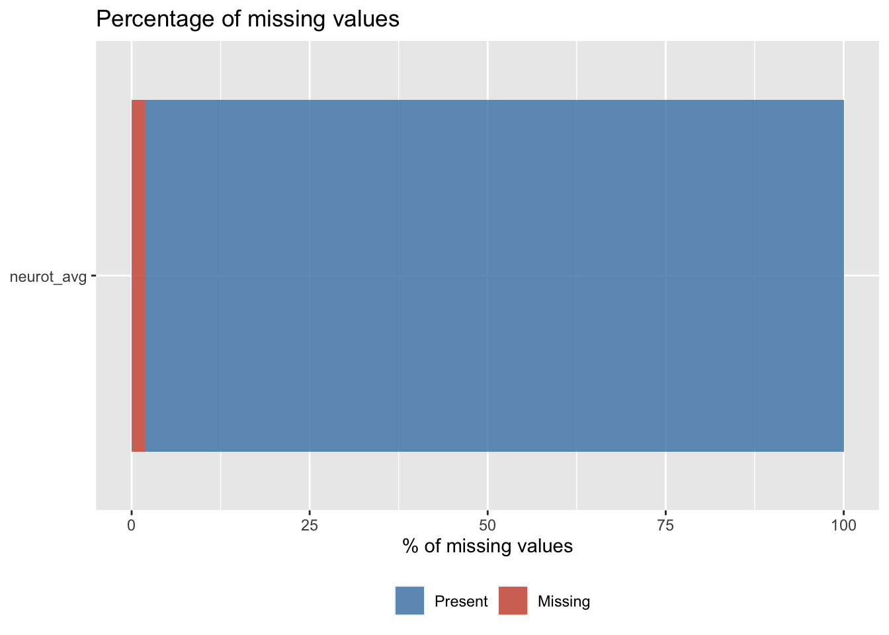
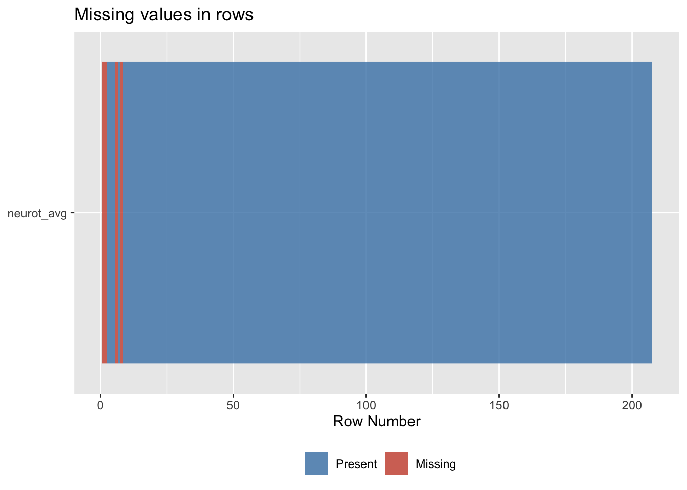
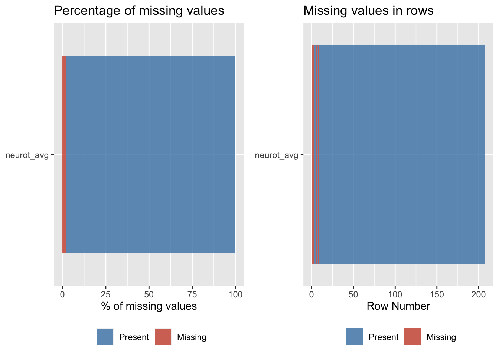
# A tibble: 1 × 4
# Groups: key, total [1]
total key num.isna pct
<int> <chr> <int> <dbl>
1 207 neurot_avg 4 1.93Missingness % Range for Participants
| Missing % | Frequency |
|---|---|
| 0 | 203 |
| 100 | 4 |